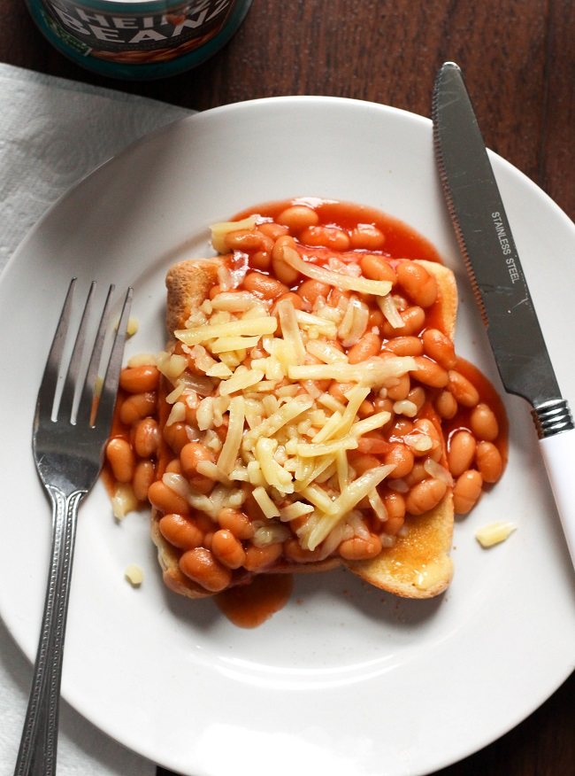

Beans on Toast

Description
The perfect breakfast to kickstart your day
prepared in less than 10 minutes
Ingridients
- 1/2 Can of beans
- A slice of bread
- As much or as little butter as you'd like
Steps
- Pour 1/2 can of beans into a small pot or a
saucepan
- While the beans are in the pot,
put a slice of bread into your toaster
- Once the the bread is finished toasting,
just add a spread of butter and pour your
pot of beans over the buttered toast.
- Enjoy !